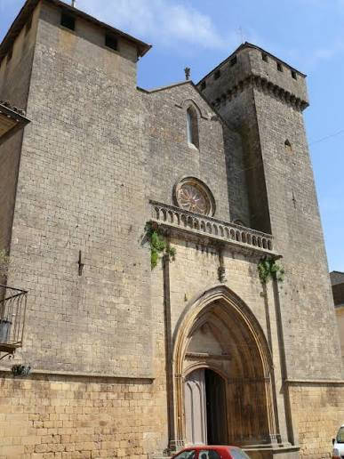

Beaumont
du-Périgord


⟹ La bastide anglaise au plan en H ⟸
Beaumont-du-Périgord est fondée en 1272 par Lucas de Thaney, sénéchal de Guyenne, au nom du roi d'Angleterre et duc d'Aquitaine Édouard Ier. Les terres sont cédées par le prieur de Saint-Avit-Sénieur, l'abbé de Cadouin et le seigneur de Biron, réunis dans un contrat de paréage.
Bâtie sur une colline où existait déjà un lieu de vie, la bastide reçoit une charte royale en 1286, puis l'autorisation de construire une halle en 1289. Son enceinte fortifiée est édifiée vers 1320.
Ville frontière entre possessions anglaises et françaises, Beaumont est prise en 1442 par le vicomte de Turenne, puis assiégée à quatre reprises durant les guerres de Religion ; son église est pillée en 1576.
Elle a conservé de cette histoire mouvementée une organisation urbaine originale, un plan en forme de « H » et l'une des églises fortifiées les plus imposantes du Périgord, disproportionnée par rapport à la taille de la cité.

Abbaye de Cadouin : ancienne abbaye cistercienne au cloître gothique flamboyant, à quelques minutes de Beaumont.
Monpazier : la bastide la mieux conservée du Périgord, à une quinzaine de kilomètres au sud.
Château de Biron : forteresse majeure des seigneurs cofondateurs de plusieurs bastides voisines.
La bastide se découvre aisément à pied ; sa lecture architecturale en damier et son plan en H se dévoilent bien depuis la place centrale.
Marché hebdomadaire animant la place des Cornières, dans la tradition des bastides du Périgord pourpre.
Randonnées possibles vers l'abbaye de Cadouin et les coteaux environnants, entre vignes et bois de chênes.